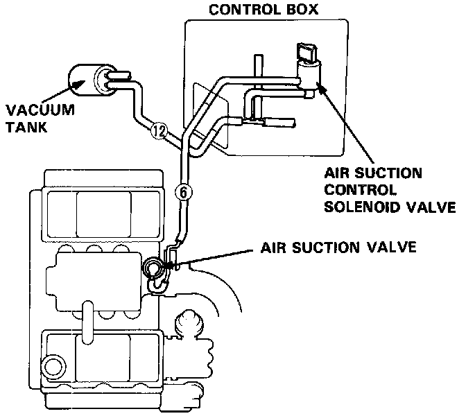
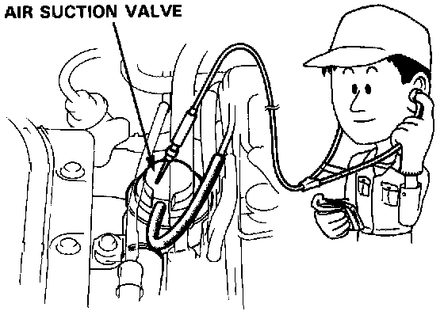
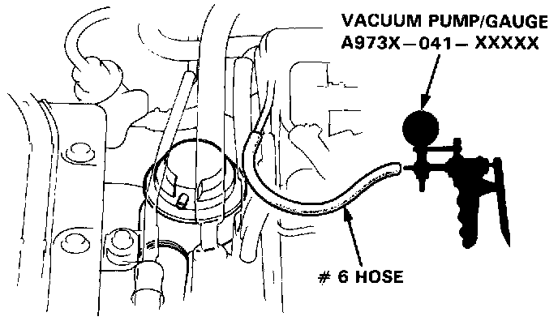

Sedan
Air Injection System Test
1. Check the vacuum line for proper connection, cracks, blockage or disconnected hose.
2. Warm up the engine (cooling fan comes on).
3. Stop the engine.
4. Restart the engine.

5. Within 20 seconds after restart, check for air suction noise (bubbling noise) from the air suction valve at idle.
Bubbling noise should be heard.

- If bubbling noise is not heard, disconnect #6 vacuum hose from the top of air suction valve and check for vacuum within 20 seconds after restart.
There should be vacuum.
- If there is vacuum, replace the air suction valve and re-test.
- If there is no vacuum, go to air suction control solenoid valve test I.
6. Stop the engine.
7. Check for air suction noise from the air suction valve at idle 30 seconds after restart.
Bubbling noise should not be heard.
- If bubbling noise is not heard, test is complete.
- If bubbling noise is heard, go to air suction control solenoid valve test II.